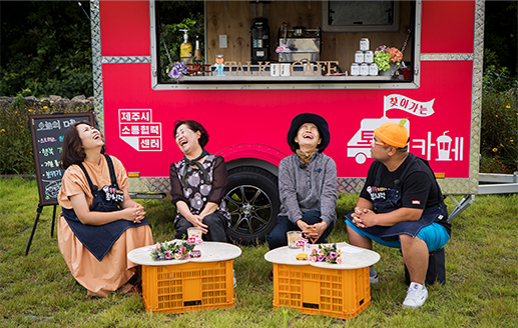
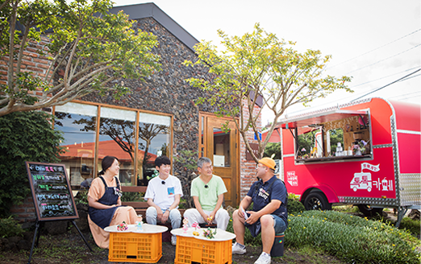

센터소개
찾아가는 톡톡 제주
주민참여형 문제정의 및 문제해결의 시도과정에 대한 단계적, 체계적인 기록 및 분석을 통해
제주에 적용 가능한 생활실험 프로세스를 정립하고 단계별 사업 운영 방안을 도출합니다.
- 소통•협력 플랫폼 구축 단계별 과제 연구
-
제주MBC와 협력하여 TV방송으로 편성한 프로그램으로, 제주 마을 곳곳을 직접 찾아가 주민들의 이야기를 듣고 지역사회의 관심사와 이슈를 발굴하여 다양한 계층 및 세대 간의 소통과 이해의 문화를 조성하고자 기획
 진행과정- 사전조사 지역 현안 및 생활 관련 주민 인터뷰 및 인문사회적 특성, 문헌 조사
- 프로그램 기획 주제에 따른 구성안 협의, 지역 선정 및 출연자 섭외
- 촬영 및 편집 지역 방문 및 촬영, 편집
- 방영 및 모니터링 TV 및 유튜브 채널을 통한 방영, 시민 모니터링단 평가
- 단행본 출판 사업 소개, 방송 인터뷰 및 비하인드 스토리를 엮은 현장기록 아카이브를 생산하고 전국 공공도서관에 배포하여 사례 공유
- 공론화 심층 논의가 필요한 이슈를 선정해 간담회, 포럼 등의 다양한 방식으로 공론화 추진
- 소개영상
-
다시 보는 <찾아가는 톡톡카페> 짤막 영상